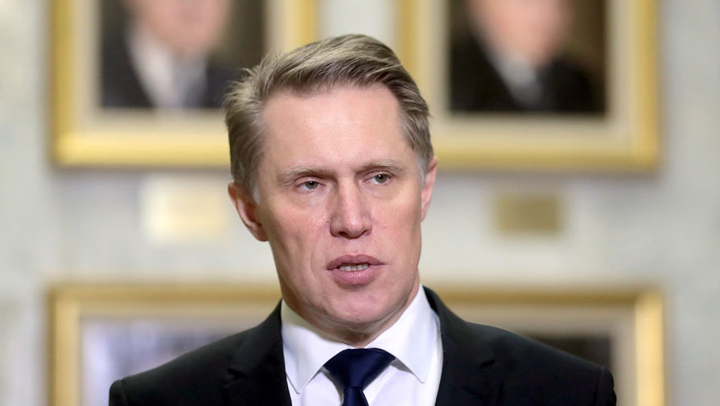
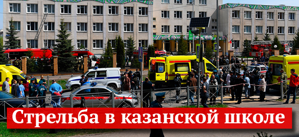

Глава Минздрава объяснил необходимость локдаунов из-за COVID-19
Ограничительные меры для борьбы с новой коронавирусной инфекцией необходимы до тех пор, пока нет возможности влиять на пандемию с помощью лекарств, заявил министр здравоохранения России Михаил Мурашко.Его слова приводит РИА «Новости».
На данный момент фармацевтического влияния на эпидемиологический процесс нет в достаточном объеме, рассказал глава Минздрава.Пока такое влияние не появится, противоэпидемические системы ограничений, системы локдаунов являются допустимыми для защиты жизни и здоровья населения.
За все время пандемии в России выявлено более 2,4 млн случаев COVID-19, из них более 43 тысяч — с летальным исходом.Всего в мире коронавирусом заразились более 67 млн человек.
НОВОСТИ ПО ТЕМЕ:
— «К концу 2021-го должна отступить»: врач рассказал о пандемии COVID-19
Posted On: 2020-12-06T21:00:00
Posted By: Полина Рутковская


Content Date: 2020-12-06
Download Date: 2021-05-13
Document ID: L0C04BZR9